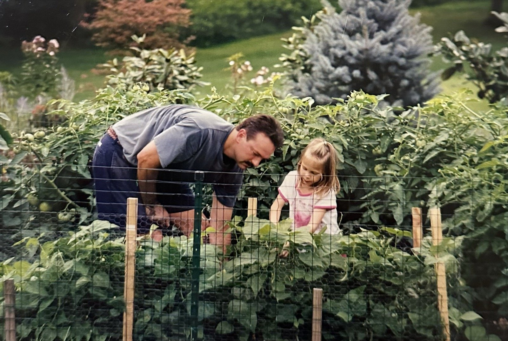

It's time to give this diagnosis hope.
My dad was diagnosed with stage 3 pancreatic cancer in the beginning of this year. It has since progressed to stage 4. Through all of it, he has faced the disease with strength, tenacity and, most important, hope, both for himself, and for others similarly impacted. He has been receiving treatment at the Penn Abramson Cancer Center, where researchers are developing promising new therapies for one of the most lethal types of cancer.
On August 15th, just over 8 months into my dad's diagnosis, I turn 30. This year, my birthday wish is a big one: to raise $30,000 for early detection and novel therapies being developed at the Penn Pancreatic Cancer Research Center.
For my dad, and for every family that hears this diagnosis after ours.
Every gift made through this page is automatically counted toward the campaign — thank you.

A difficult diagnosis at a hopeful moment
Pancreatic cancer is a devastating diagnosis. It is challenging to treat for two distinct reasons. First, given the lack of routine screening and vague initial symptoms, it is hard to detect, resulting in late diagnosis. Second, for more than a decade, treatment options have remained stagnant. For most patients, it has come down to only two standard chemotherapy regimens.
This year, there has been exciting movement. Daraxonrasib is the first drug to target KRAS, the mutation that drives over 90% of pancreatic cancers and was considered "undruggable" for years. In a phase 3 trial, it roughly doubled survival for those with metastatic pancreatic cancer, from 6.7 months with the chemotherapy regimen to 13.2 months with daraxonrasib.
Through all of this, my dad's philosophy has been to make it to the next milestone in pancreatic cancer research. Daraxonrasib is the first one. It is not a cure, but it brings him, and so many others, one step closer to the therapies coming right behind it. The hope is to extend patients' lives long enough to find a cure. Your support would be behind this mission.
What "with joy and vigor" means
The day my dad was diagnosed, he told us what he wanted most: that his four daughters live our lives with joy and vigor — the way he's raised us to. That has stayed with me ever since. It's how he's carried himself through all of this, and it's the spirit this whole campaign is built on.
Where every dollar goes
Every dollar goes directly to the University of Pennsylvania, designated for the Cure Pancreatic Cancer Fund within Penn's Pancreatic Cancer Research Center, the team treating my dad and one of the country's leading centers for pancreatic cancer research. Its director, Dr. Robert Vonderheide, has pioneered immunotherapy approaches for pancreatic cancer now in later-stage clinical trials.
We're directing this campaign toward the two things that change the story of this disease: early detection, so more families catch it when it's most treatable, and novel therapies that push the boundaries of a historically stubborn cancer. Penn's PCRC leads in both.
Donations go straight to Penn, a 501(c)(3). They're tax-deductible, you'll receive a receipt from Penn, and nothing passes through us.
Come celebrate with us
My 30th birthday lands right in the middle of the campaign, so we're throwing a party.
RSVP on PartifulWays to give
-
Give online
The fastest way, direct to Penn through our official giving page — every gift is automatically counted toward the campaign. Donate now
-
Double it with employer matching
Many companies match charitable gifts. A two-minute form can double what you give. Designation: Cure Pancreatic Cancer Fund (Penn Medicine Fund 605991), noted "30for30".
-
Give by check
Payable to Trustees of the University of Pennsylvania, memo line: Cure Pancreatic Cancer Fund (605991), 30for30.
There's no minimum and no expectation. A dollar, a coffee's worth, whatever feels right. What matters is that you're in this with us. The number on the bar is really a count of people who showed up.